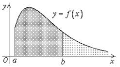
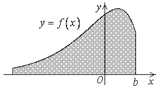
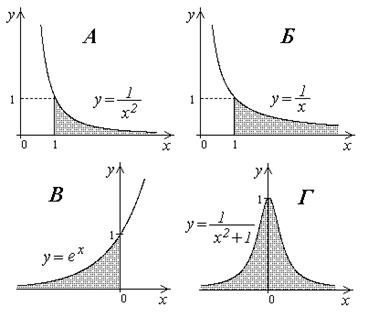

25.1.2. Обобщенная формула Ньютона-Лейбница
Пусть  – первообразная
для функции
– первообразная
для функции  на промежутке . Воспользуемся формулой Ньютона-Лейбница
для интеграла
на промежутке . Воспользуемся формулой Ньютона-Лейбница
для интеграла  :
:
– первообразная
для функции на промежутке . Воспользуемся формулой Ньютона-Лейбница
для интеграла :
Формула
Ньютона-Лейбница для несобственного интеграла первого рода
.
Обозначим , тогда .
Аналогично, , , где .
Исследовать сходимость интеграла .
Решение:
При
Пусть , тогда
и
, ,
значит, при интеграл сходится.
Пусть , тогда
и
,
т.е. интеграл при расходится.
При :
.
Интеграл расходится.
Вычислить несобственные интегралы или доказать, что они
расходятся:
1) ; 2) ; 3);
4)  ; 5) .
; 5) .
; 5) .Решение:
Воспользуемся обобщенной формулой Ньютона-Лейбница:
1˚. (интеграл
сходится).
2˚. (интеграл расходится).
3˚. . Этот предел не
существует, поэтому – расходится.
4˚. (интеграл сходится).
5˚. (интеграл сходится).
Выясним геометрический смысл несобственного интеграла
1-го рода.
Пусть  на промежутке
на промежутке  .
.
на промежутке .
Пусть на промежутке .
на промежутке .Тогда численно равен
площади фигуры, ограниченной снизу отрезком  оси
оси
 , сверху – линией
, сверху – линией  , слева и справа – прямыми
, слева и справа – прямыми  и
и  .
При возрастании
.
При возрастании  прямая , ограничивающая эту фигуру,
двигается вправо, а интеграл стремится к
интегралу . Поэтому величину интеграла естественно принять за площадь бесконечной
фигуры, ограниченной снизу осью , сверху графиком
функции , слева – прямой .
прямая , ограничивающая эту фигуру,
двигается вправо, а интеграл стремится к
интегралу . Поэтому величину интеграла естественно принять за площадь бесконечной
фигуры, ограниченной снизу осью , сверху графиком
функции , слева – прямой .
оси
, сверху – линией , слева и справа – прямыми и .
При возрастании прямая , ограничивающая эту фигуру,
двигается вправо, а интеграл стремится к
интегралу . Поэтому величину интеграла естественно принять за площадь бесконечной
фигуры, ограниченной снизу осью , сверху графиком
функции , слева – прямой .Аналогично, для случая численно равен площади бесконечной
фигуры, ограниченной снизу осью , сверху кривой , справа прямой .
численно равен площади бесконечной
фигуры, ограниченной снизу осью , сверху кривой , справа прямой .
Вычислить площади бесконечных фигур, ограниченных осью , линией ,
прямой , если
, линией ,
прямой , еслиа) ,
б) ,
в) ,
г) .
Решение:
Построим фигуры, ограниченные данными линиями

Воспользуемся результатами примера 1.
а) ,
б) ,
Фигура, изображенная на рис.б), имеет бесконечную площадь.
в) ,
г) .